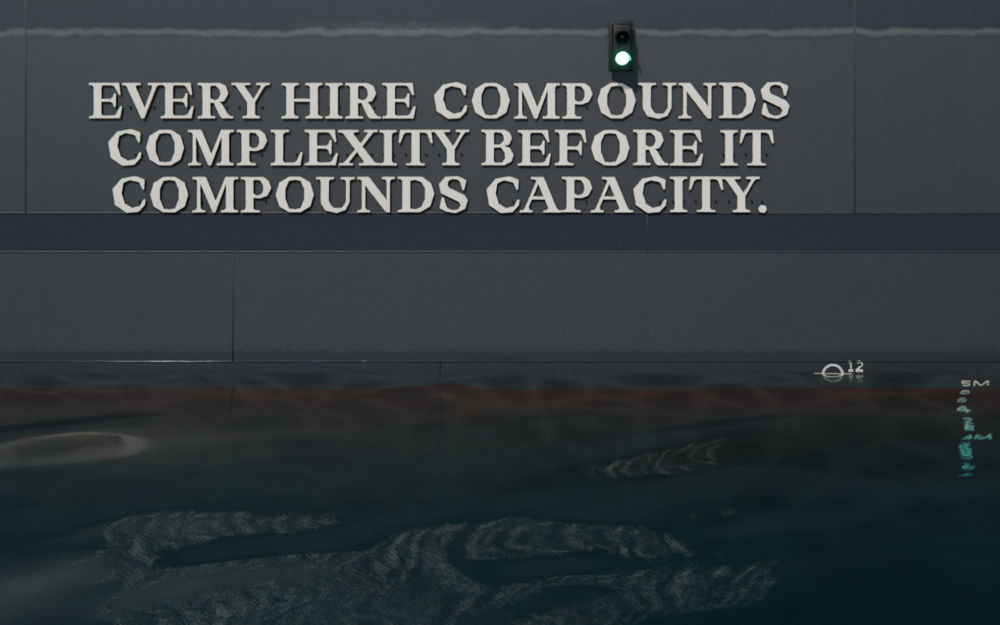

Scaling Up‑Side‑Down
The book
SUSD Bootloader
Get it free
complexity
capacity
margin
Real scaling is cyclical.
Cycle 2 of 3
Up
Up for growth.
Side
Side for stability.
Systems absorb the growth, structure stabilizes
Down
Down for pruning.
Up. Side. Down. Repeat.
Each cycle deposits systems and margin. The next cycle withdraws from a larger account.